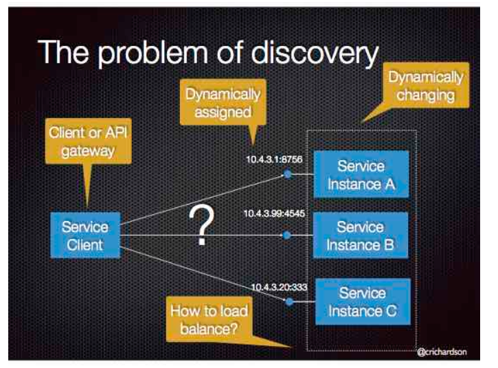

# 前言
将应用程序分解成多个微服务共同工作，为其提供服务，微服务部署在 contain 上，contain 部署在具有负载均衡的服务器上，不同微服务之间通过 api 进行调用。相较于单体应用，微服务在系统的 scale ability 上有更佳的表现。
# 微服务简介
微服务的死对头：单体应用。所谓知己知彼，百战百胜。要想透彻的了解微服务的诞生，必须要明白单体应用的架构，优缺点。
Monolithic Application：所有功能模块整合在一个单一的代码库和部署单元中的应用程序，所有的组件都在一个系统中运行。
最常见的单体应用框架，Spring Boot。单体应用架构中有 6 个模块：WEB_UI API MYSQL_ADAPTER TWILIO_ADAPTER SENDGRID_ADAPTER STRIPE_ADAPTER。
这些模块定义了服务、领域对象和事件。围绕核心的与外部事件接口对接的适配器，包括数据库访问组件、生产和消费消息的消息组件暴露的 API。单体应用部署服务器常用的负载均衡模式是冗余，通过运行多个副本来扩展应用。在并发数较少、用户量较少的前期阶段，它可以良好的运作。
# 单体应用的地狱
单体应用的架构和部署是简单的，但是有着很大的局限性。单体应用在业务上的成功会使得需求越来越多，系统随时间的推移变得越来越臃肿。一旦单体应用成为一个庞大、复杂的单体，可扩展会变得非常困难，可谓牵一发而动全身。任何优秀的软件架构师都无法架构出永远不会成为屎山的系统。根据可扩展性的定义：系统的扩大不会带来性能上的损失，单体应用的规模的扩大极易带来性能的下降，这从系统的启动时间就可以看出。除了可扩展性的问题，复杂的单体应用本身就是持续部署的障碍。
单体应用的另一个问题就是可靠性，由于所有的模块都运行在同一个进程中，任何一个模块的 bug，都可能带来系统的崩溃。单体应用的重构是非常具有挑战的。
# 微服务 —— 解决复杂问题
单体问题带来的大部分问题，在微服务架构中能够得到很好的解决。微服务的理念是将应用分家成一套较小的互联服务。
一个微服务通常实现一组不同的特性和功能，具有自己的六边形架构。微服务会暴漏工其他微服务或客户端消费的 api。运行时，微服务实例会部署在云虚拟机或者 docker 容器上。服务之间可以通过异步、基于消息的通信、可以通过 rest api 进行通信。
客户端和后端之间的通信是通过称为 api gateway 负责的。api gateway 负责负载均衡、缓存、访问控制、api 度量和监控。后面会详细介绍 api gateway。
# 微服务的缺点
- 服务的规模
- 服务间的通信
- 分区数据库架构
- 测试
- 部署服务发现机制
- PaaS 平台即服务：开发自己的 PaaS：Kubernetes 集群服务
# API Gateway
微服务架构中，每个微服务会暴露一组比较细颗粒的端点。
假设现在有个 GET 请求，在单体服务架构中，会发送到负载均衡服务器，服务器决定发送该请求到部署相同应用实例的服务器中的其中一个。相比于微服务架构，这个 GET 请求可能会涉及到很多微服务，因此客户端不会只发送一个 GET 服务，而是发送多个 GET 服务到各个实例中。
# 客户端与微服务的直接通信
每个微服务有一个暴露的 REST API（端点），理论客户端可以直接调用某个微服务的 api，但是通过直接调用不同 api 来实现某个服务，这样效率十分低下。
下面列举几个客户端直接与微服务端建立连接的几个缺点：
- 服务涉及的微服务请求多而杂，对客户端编写有难度
- 直接向微服务端发送请求不够安全
- 微服务架构不容易重构
由于上面的问题，在微服务架构下的客户端中，很少有客户端会直接向微服务端进行通信。
# 使用 API gateway
下面来到本章节的重点，客户端和服务端通信的更好的方式是使用 API gateway。API gateway 是一个服务器，是系统的单入口点。它类似于面向对象设计模式中的 Facade 模式。
简单介绍一下 Facade 模式，防止有读者不了解这一经典的设计模式。Facade 设计模式是提供一个统一的接口来访问一个子系统的一组接口。统一的接口称为高层接口。客户端与 Facade 对象通信，Facade 管理下层接口。
API gateway 的工作模式类似于 Facade 模式，API gateway 是一组 Facade 门户，负责请求路由、组合和协议的转换。API gateway 会调用多个微服务来处理一个请求并聚合结果。API gateway 的作用其实可以简化为将一个 web 协议请求（http、web socket）转化为内部的非 web 协议的请求。
# API gateway 的优劣
待补充
# 实现 API 网关
下面来聊聊 API gateway 如何设计。
API gateway 负责将客户端请求分解成多个微服务请求，并 route 到对应的微服务器上。API gateway 需要并发地处理这些微服务请求，这些微服务请求是彼此独立的。
如果遇到请求之间有依赖关系，则不能并发地处理请求，需要将 api 进行具有次序的组合。通常 API gateway 会异步地 4 处理这些请求，但是采用传统的异步回调方式，会在后期陷入回调地狱，代码充斥着各种回调，使得代码深色难懂。更好的办法是采用响应式方法以声明式方式编写 API gateway 代码。
# 服务调用
基于微服务的应用是一个分布式系统，必须使用进程间通信机制。有两个进程通信方案，一是使用基于消息的异步机制，如 JVM 和 AMQP，二是采用同步机制，如 Http。API gateway 需要支持各种通信机制以灵活应用。
# 服务发现
API gateway 需要知道其管理的每个微服务的位置（IP 地址和端口）。这不是一件简单的事情，API 网关与系统中的其他客户端一样需哟啊使用系统的服务发现机制。后面会详细地介绍这部分内容。
# 处理局部故障
什么是局部故障。在一个微服务架构系统中，当某个微服务不可用时，会发生局部故障，需要对故障进行故障处理。所有的分布式系统都有这个问题。如何处理局部故障取决于特定的方案和哪些服务发生故障。
API 返回缓存数据也是处理局部故障的方式，当数据变化不大并且数据不可用时，可以返回缓存数据。
# 第三章 - 进程间通信
由于微服务是部署在多台机器上的分布式系统，每个服务实例都是一个进程，因此在不同进程间通信在微服务部署中扮演重要的角色。
# 交互方式
交互方式通常分为一对一和一对多：
- 一对一：每个客户端请求都有一个服务实例处理
- 一对多：每个客户端请求有多个服务实例处理
交互方式是同步的还是异步的：
- 同步：要求服务及时响应，会发生阻塞
- 异步：不会发生阻塞，因此请求不一定得到响应
根据上述交互方式，大致可分为几种情况：
一对一：请求 / 响应、通知、请求 / 异步响应
一对多：发布 / 订阅、发布 / 异步响应
# 定义 API
定义 api 取决于你使用何种 ipc 机制。
# 演化 API
微服务的 api 演化是非常困难的，新版本的微服务需要兼容低版本的客户端。
# 处理局部故障
先不考虑、带补充（🐶
# IPC 技术
- 基于同步请求 / 响应的通信机制（基于 HTTP 的 REST）
- 基于消息的异步通信机制（AMQP 或 STOMP）
# 异步、基于消息的通信
进程通过异步交换消息进行通信。客户端通过发送消息向服务端发出请求；服务端如果需要回复，则向客户端发送单独的消息来实现。由于异步，客户端不会阻塞等待回复。
消息有 header 和 body 组成。两端 endpoint 通过 channel 连接。
message channel：一端写，可以在另一端读。writer 不需要知道 reader 是哪个具体的应用
type：point to point 、publish-subscribepoint to point ：一对一
publish-subscribe：一对多，把消息发布给所有注册订阅的消费者。
message channel 是非常值的研究的技术，之后会单开一篇文章来介绍常用的 message channel 的设计模式。
# 同步的请求 / 响应 IPC
和单体模式下的请求形式差不多：REST HTTP
# 第四章 - 服务发现
由于微服务架构中的自动缩扩容问题，需要客户端进行更精确的服务发现机制，而不是简单地通过 ip 来确定。
# 客户端发现模式 Client-side service discovery

查询服务缓存，可以知道服务 Location